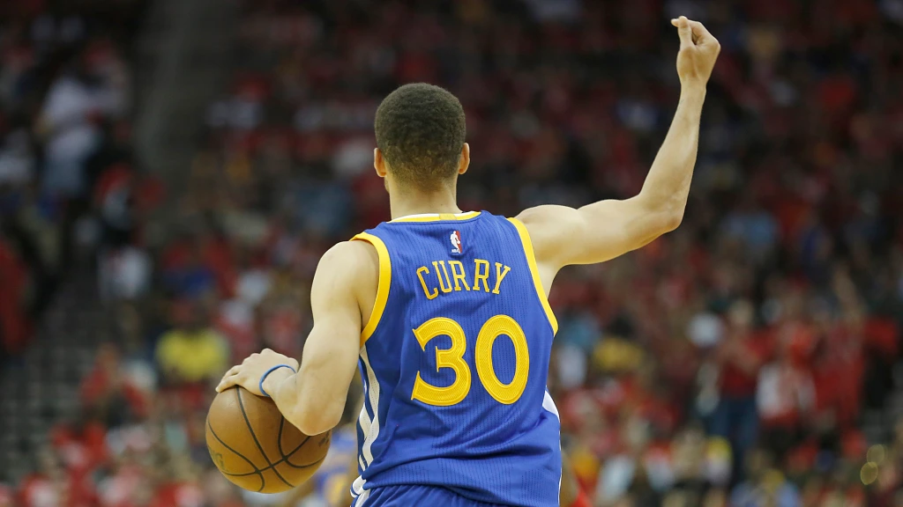
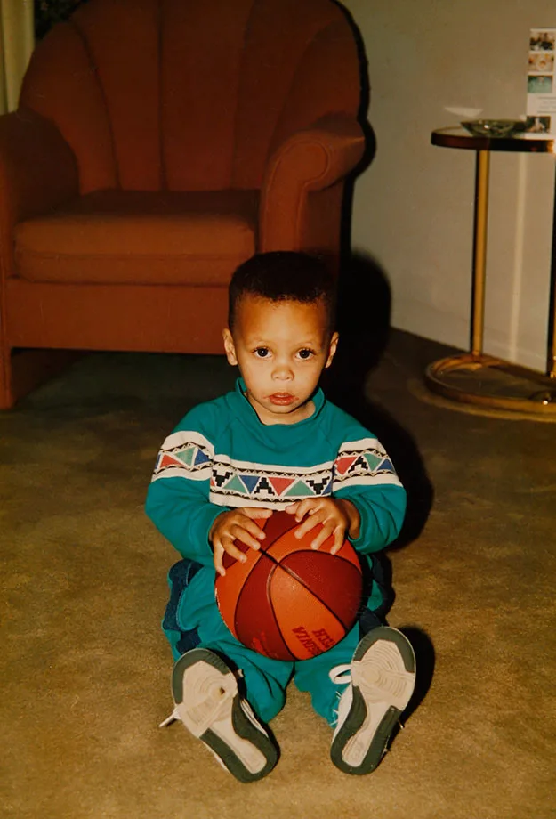
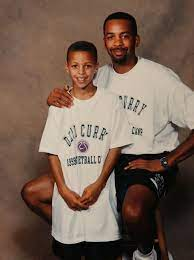

Back of Curry's jersey.

A very young Stephen Curry sitting with a plush basketball
Wardell "Stephen" Curry Ⅱthe second or Steph Curry, as we know him, is an active nba Player. He was born in 1983 in Akron, Ohio, the same town as NBA Superstar, LeBron James. Steph is eldest son of Wardell "Dell" Curry Sr., a former nba player, and his wife, Sonya Curry. He grew up with two younger siblings, Seth and Sydel Curry. Steph and his siblings grew up in nba Arenas. Dell Curry played for three different teams during his tenure in the nba. The Curry kids lived every young basketball players' dream childhood. Stephen and Seth have reminisced in interviews of what life was like for them growing up with a pro dad. They had access to behind the scenes' activities some can only image. They were allowed to attend some practices and participate in special NBA events. Sonya Curry has jokingly recalled dragging Steph and his siblings off the court during pre-game warm-ups or watched as they ran through the filling arena stands.Dell also spoke openly with usab during an interview about STephen as a kid and more. You can find link to the article in the Resources section.
In 2019 during an interview with usab when asked about a young Steph Curry. Dell Curry gave the following statement:
"He was energetic, always paid attention to what was going on, eager to learn. He tried several different sports, not just basketball. He played football, baseball, a little soccer. He was always very intuitive of what was going on around him. He just soaked it all up."
- Dell Curry
Dell and other members of the Curry family aren't the only ones who have spoken fondly of a young Steph. There are many articles and videoes of past basketball stars retelling tells of meeting and knowing Stephen Curry as a kid. Several even elaborated on seeing Curry's future potential in the sport. It's safe to say that getting to spend his childhood around legends of the game has greatly influenced Steph's love for basketball. Through the support, love, and encouragement of his family Steph was able to gain the skills needed to earn a spot on his high school team. He played basketball at Charlotte Christian in North Carolina.

A young Stephen Curry with his father.
While in high school he was named to the All State Team, All Conference Team, and won his Team's MVP award. He helped lead his team to three conference titles and three state playoff appearences. He ended his high school career ranked No. 16 in his state and No. 60 of all point guards National Wide. Yet suprisingly Curry was not a highly sought after recruit. Towards the end of his high school career Stephen was only rated as an 3 star recruit. The highest rating a high school player can get is 5 and the lowest is 2. So being rated so low amgonst other players across the country did not land him any scholarship offers. Curry had his eyes set on Virginia Tech to follow in his father's footsteps but after a try-out with the team he was only offered a walk-on role. However Steph knew he needed to go to a school where he would be guaranteed playing time if he wanted to make his dreams of going pro come true. It is no secret many colleges over looked Curry because of his physical appearance. At the end of his high school career, Stephen Curry stood at only 6'0 feet tall and weighed under 200 lbs which many deemed unsuitable for the cutthroat and physically demanding nature of college basketball. Which left his choices of colleges very slim. In the end he chose to go to a local college.